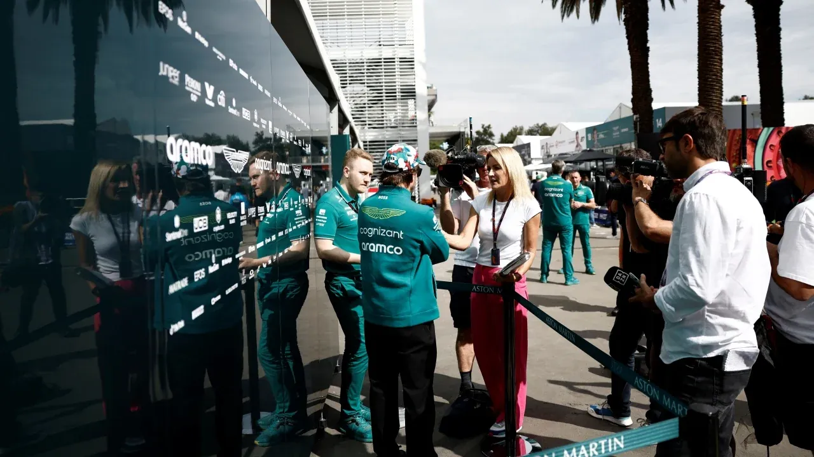

Contacta a Racer 1, tu guía de Fórmula 1 en Ciudad de México
¿Tienes dudas sobre la Fórmula 1, sugerencias para el sitio o quieres colaborar con Racer 1? Escríbenos, nos encantará leerte.
Correo y ubicación de Racer 1 en Ciudad de México
Correo electrónico: contacto@racer1.com Ciudad de México, MéxicoCanales para enviar tus dudas sobre Fórmula 1
- Correo electrónico para consultas generales sobre F1.
- Mensaje directo en las redes sociales de Racer 1.
- Formulario de contacto (próximamente).
Noticias del paddock de la F1, directo a tu bandeja de entrada
